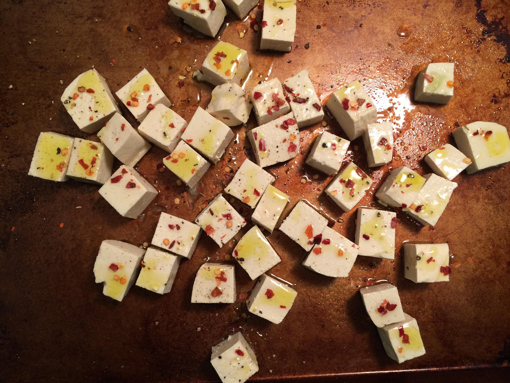
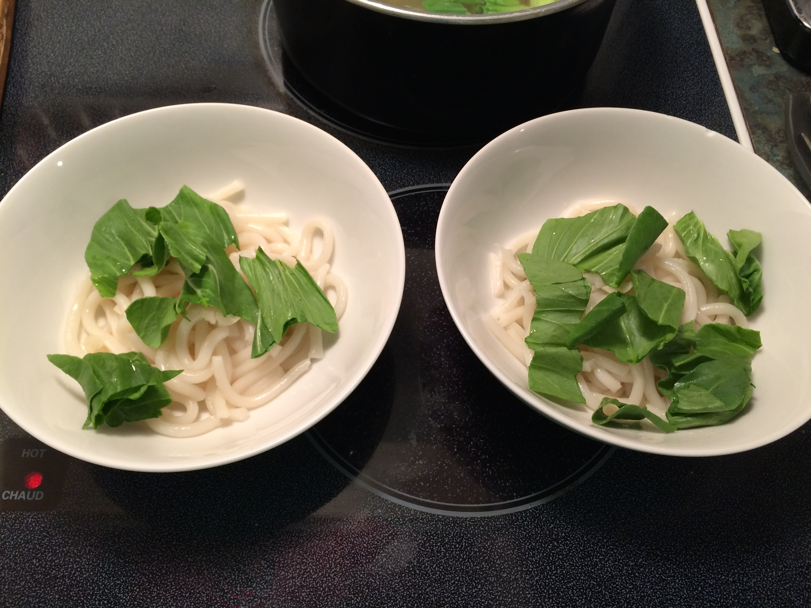
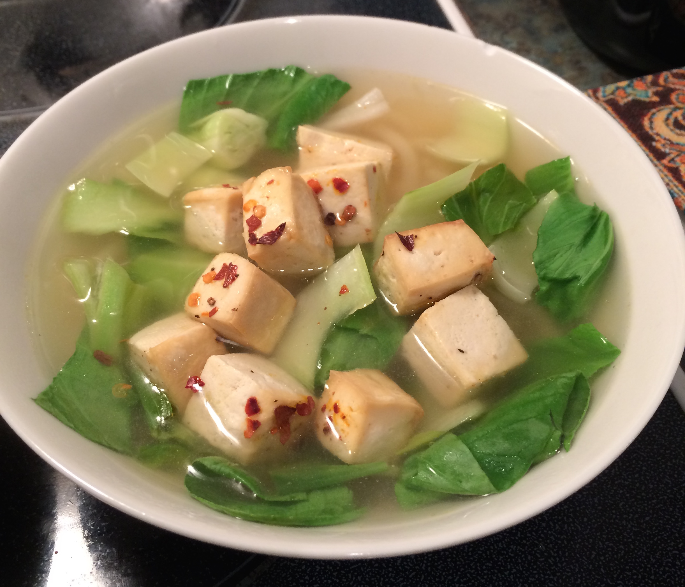

Bok Choy and Tofu Udon Noodle Soup
Click here to hide/show photos
Here's a warming winter recipe that I love. The finished dish looks simple, but don't let that deceive you. Get ready to be wowed with flavour! Think ginger, garlic, lime, and chili flakes....... Want some yet?

Ingredients
- 1 L boiling water
- 3 tbsp chicken or veggie stock
- 1 tbsp ground ginger
- 2 cloves crushed garlic
- 2 tbsp soy sauce
- 300 g firm tofu, cubed
- Juice of one lime + 1/2 lime zest
- 2 tbsp chili flakes
- 1 tsp garlic powder
- Olive oil
- Salt & pepper
- Sriracha
- 2-3 baby bok choy, roughly chopped
- 1 pk Udon noodles
- Green onions

Directions
- Preheat oven to 350F.
- Coat tofu in olive oil, lime juice, lime zest, dried chilli, garlic powder, and salt and pepper. Let it marinade like this for a while.
- Put the tofu on a baking sheet and bake in the oven for 12 minutes.
- Cook the udon noodles in the boiling water.
- Remove noodles with tongs into a strainer (keep the water!). Divide the noodles into two bowls, and top with some of the bok choy leaves.
- In the pot with the boiling water, add: stock, ground ginger, soy sauce, crushed garlic, a dash of sriracha, salt and pepper and simmer on low.
- Remove the tofu from the oven, coat in extra oil, turn and place back in oven for a further 5-8 minutes.
- Add the bok choy to the boiling water during the last 5 minutes.
- Once tofu is extra crispy, remove from oven.
- Pour the broth and bok choy into the two bowls, and top with the tofu, some chopped green onion, and extra chili flakes and lime. It's done! Enjoy!

Variations for next time:
- Let the tofu marinade for a few minutes in a soy sauce, lime juice, sriracha, olive oil mixture
- Try pan-frying the tofu on medium-high heat for a crispier finish
- Play around with the broth. Add a dash of fish sauce, or maybe some shiitake mushrooms!